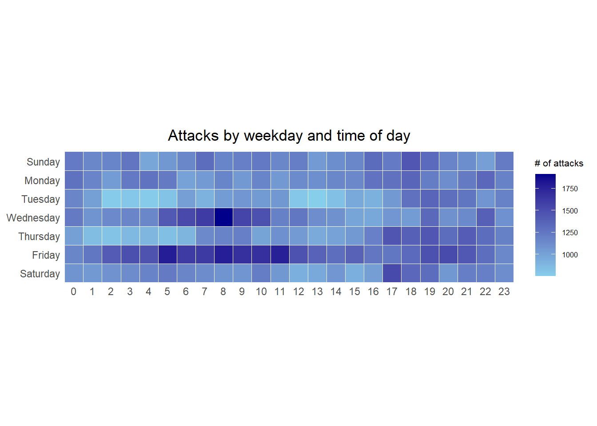
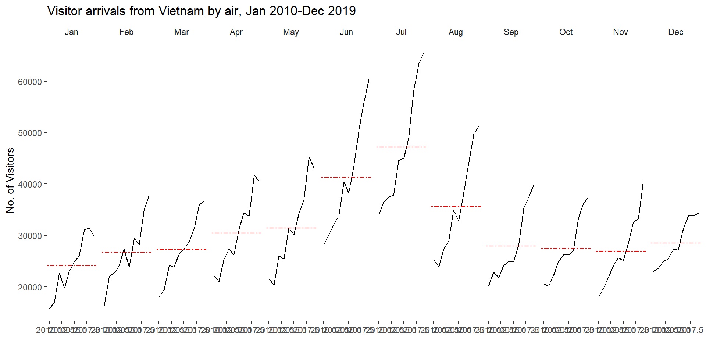
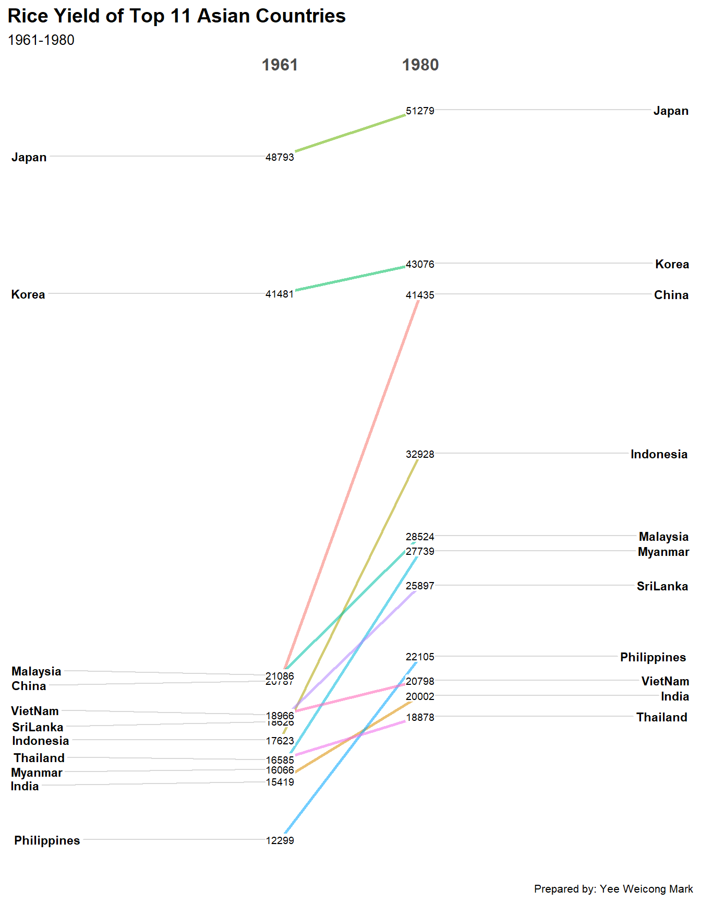

pacman::p_load(scales, viridis, lubridate, ggthemes,
gridExtra, readxl, knitr, data.table,
tidyverse)Hands-on Exercise 8
Visualising and Analysing Time-Oriented Data with R
17 Visualising and Analysing Time-Oriented Data
17.1 Learning Outcome
Time-oriented data carries an ordering that ordinary categorical data does not. A weekday follows a weekday, a month follows a month and a reader expects the chart to respect that order. This chapter builds three displays that each exploit the structure of time in a different way.
A calendar heatmap lays time out on a grid of weekday against hour. The grid exposes recurring daily and weekly rhythms. A cycle plot unrolls a seasonal series so the same month across many years sits in one panel. The arrangement separates the within-year season from the across-year trend. A slopegraph connects two points in time with a single line per series. The single lines make rank changes legible at a glance.
By the end of this hands-on exercise you will be able to:
- plot a calendar heatmap using ggplot2 functions and extensions,
- plot a cycle plot using ggplot2 functions,
- plot a slopegraph using the CGPfunctions package,
- derive date and time fields using base R and lubridate,
- write a small R function to reshape raw timestamps into tidy fields.
17.2 Getting Started
This exercise reproduces the three time-oriented displays of Chapter 17 of R for Visual Analytics. It uses the same datasets, the same plotting code and the same section structure. The one adaptation concerns the now-archived CGPfunctions package, which is installed from a patched source rather than the live CRAN repository.
17.3 Do It Yourself
Write a code chunk to check, install and launch the following R packages.
- scales for axis and label formatting such as
percent() - viridis for perceptually uniform colour palettes
- lubridate for parsing and extracting date-time components
- ggthemes for
theme_tufte()and other minimal themes - gridExtra for arranging multiple plots on one page
- readxl for importing Excel workbooks
- knitr for
kable()table rendering - data.table for fast in-function data frame construction
- tidyverse for data import and manipulation
The r4va chapter also loads CGPfunctions and ggHoriPlot in this step. CGPfunctions provides the slopegraph function and was archived from CRAN in November 2025, so p_load() cannot fetch it here. It is installed separately from a patched source. ggHoriPlot supports the horizon chart, which falls outside this exercise, so it is omitted.
17.4 Plotting Calendar Heatmap
A calendar heatmap encodes a count with colour on a two-dimensional time grid. The grid is weekday (rows) against hour of day (columns), and the colour shows how many cyber-attacks arrived in each weekday-hour cell.
By the end of this section you will be able to:
- plot a calendar heatmap using ggplot2 functions and an extension theme,
- write a function in R,
- derive specific date and time fields using base R and lubridate,
- perform data preparation tasks using tidyr and dplyr.
17.4.1 The Data
The eventlog.csv file holds 199,999 rows of time-stamped cyber-attack records by source country. Each row carries timestamp, source_country and tz.
17.4.2 Importing the Data
attacks <- read_csv("data/eventlog.csv")17.4.3 Examining the Data Structure
Inspect the imported data frame before any analysis. kable() renders the first rows as a clean HTML table.
kable(head(attacks))| timestamp | source_country | tz |
|---|---|---|
| 2015-03-12 15:59:16 | CN | Asia/Shanghai |
| 2015-03-12 16:00:48 | FR | Europe/Paris |
| 2015-03-12 16:02:26 | CN | Asia/Shanghai |
| 2015-03-12 16:02:38 | US | America/Chicago |
| 2015-03-12 16:03:22 | CN | Asia/Shanghai |
| 2015-03-12 16:03:45 | CN | Asia/Shanghai |
17.4.4 Data Preparation
Step 1: Deriving the weekday and hour Fields
Two new fields, wkday and hour, must be derived before the heatmap can be drawn. A small function does the work so it can be applied time-zone by time-zone.
make_hr_wkday <- function(ts, sc, tz) {
real_times <- ymd_hms(ts,
tz = tz[1],
quiet = TRUE)
dt <- data.table(source_country = sc,
wkday = weekdays(real_times),
hour = hour(real_times))
return(dt)
}Step 2: Deriving the attacks Tibble
The function is applied to each time-zone group, and the two new fields are converted to ordered factors so the plot axes follow calendar order rather than alphabetical order.
wkday_levels <- c('Saturday', 'Friday',
'Thursday', 'Wednesday',
'Tuesday', 'Monday',
'Sunday')
attacks <- attacks %>%
group_by(tz) %>%
do(make_hr_wkday(.$timestamp,
.$source_country,
.$tz)) %>%
ungroup() %>%
mutate(wkday = factor(
wkday, levels = wkday_levels),
hour = factor(
hour, levels = 0:23))kable(head(attacks))| tz | source_country | wkday | hour |
|---|---|---|---|
| Africa/Cairo | BG | Saturday | 20 |
| Africa/Cairo | TW | Sunday | 6 |
| Africa/Cairo | TW | Sunday | 8 |
| Africa/Cairo | CN | Sunday | 11 |
| Africa/Cairo | US | Sunday | 15 |
| Africa/Cairo | CA | Monday | 11 |
17.4.5 Building the Calendar Heatmaps
The records are aggregated to a count per weekday-hour cell, then mapped to a coloured tile grid.

grouped <- attacks %>%
count(wkday, hour) %>%
ungroup() %>%
na.omit()
ggplot(grouped,
aes(hour,
wkday,
fill = n)) +
geom_tile(color = "white",
size = 0.1) +
theme_tufte(base_family = "Helvetica") +
coord_equal() +
scale_fill_gradient(name = "# of attacks",
low = "sky blue",
high = "dark blue") +
labs(x = NULL,
y = NULL,
title = "Attacks by weekday and time of day") +
theme(axis.ticks = element_blank(),
plot.title = element_text(hjust = 0.5),
legend.title = element_text(size = 8),
legend.text = element_text(size = 6))
NoteThings to Learn from the Code Chunk Above
count(wkday, hour) aggregates to one row per cell with the tally in a new column n. na.omit() drops cells with unparseable times. geom_tile() draws one rectangle per cell, and color = "white" with size = 0.1 gives each tile a thin white border. theme_tufte() from ggthemes strips chart junk down to the data, coord_equal() forces square tiles and scale_fill_gradient() builds a two-colour low-to-high ramp.
TipReading the Plot
The darkest band sits across the working hours of the working week. Attacks do not arrive at random times. They track when machines and people in the source regions are active.
17.4.6 Building Multiple Calendar Heatmaps
Challenge. Build a calendar heatmap for each of the four countries with the highest number of attacks, placed side by side so their daily rhythms can be compared on a shared scale. A single heatmap mixes every source country together. Faceting by country shows whether the heaviest attackers share one rhythm or each have their own.
17.4.7 Plotting Multiple Calendar Heatmaps
Step 1: Deriving the Attack-by-Country Object
To identify the top four countries, count the attacks by country, compute each country’s percentage share and save the result in a tibble.
attacks_by_country <- count(
attacks, source_country) %>%
mutate(percent = percent(n/sum(n))) %>%
arrange(desc(n))Step 2: Preparing the Tidy Data Frame
Extract the records of the top four countries from attacks and save them in a new tibble.
top4 <- attacks_by_country$source_country[1:4]
top4_attacks <- attacks %>%
filter(source_country %in% top4) %>%
count(source_country, wkday, hour) %>%
ungroup() %>%
mutate(source_country = factor(
source_country, levels = top4)) %>%
na.omit()17.4.8 Plotting Multiple Calendar Heatmaps
Step 3: Plotting the Multiple Calendar Heatmap with ggplot2
The same tile grammar is wrapped in facet_wrap() to produce one heatmap per country.

ggplot(top4_attacks,
aes(hour,
wkday,
fill = n)) +
geom_tile(color = "white",
size = 0.1) +
theme_tufte(base_family = "Helvetica") +
coord_equal() +
scale_fill_gradient(name = "# of attacks",
low = "sky blue",
high = "dark blue") +
facet_wrap(~source_country, ncol = 2) +
labs(x = NULL, y = NULL,
title = "Attacks on top 4 countries by weekday and time of day") +
theme(axis.ticks = element_blank(),
axis.text.x = element_text(size = 7),
plot.title = element_text(hjust = 0.5),
legend.title = element_text(size = 8),
legend.text = element_text(size = 6))
NoteThings to Learn from the Code Chunk Above
facet_wrap(~source_country, ncol = 2) splits the plot into a two-column panel grid, one panel per country, while every panel shares the same axes and colour scale. The shared scale keeps the panels honestly comparable. A dark tile means the same count in every panel.
TipReading the Plot
The countries do not share one rhythm. Time-zone localisation means each panel reflects the source’s own working day, so the active block shifts position from country to country even though all four are read on the same axes.
17.5 Plotting Cycle Plot
A cycle plot separates two things that a normal time series tangles together. These are the seasonal shape within a year and the trend across years. Each month gets its own mini time series of yearly values, with a reference line at that month’s long-run average. Here it shows visitor arrivals from Vietnam by air.
17.5.1 Step 1: Data Import
The arrivals_by_air.xlsx workbook records monthly visitor arrivals to Singapore by air, one column per source country. It is imported with read_excel() of readxl.
air <- read_excel("data/arrivals_by_air.xlsx")17.5.2 Step 2: Deriving Month and Year Fields
Separate month and year fields are derived from the Month-Year field.
air$month <- factor(month(air$`Month-Year`),
levels = 1:12,
labels = month.abb,
ordered = TRUE)
air$year <- year(air$`Month-Year`)17.5.3 Step 3: Extracting the Target Country
The cycle plot focuses on one country. Vietnam is extracted along with the derived fields, keeping years from 2010 onward.
Vietnam <- air %>%
select(`Vietnam`,
month,
year) %>%
filter(year >= 2010)17.5.4 Step 4: Computing Year-Average Arrivals by Month
A reference line per month is the mean across all years for that month, computed with group_by() and summarise() of dplyr.
hline.data <- Vietnam %>%
group_by(month) %>%
summarise(avgvalue = mean(`Vietnam`))17.5.5 Step 5: Plotting the Cycle Plot
Each month becomes a panel. Within it a line tracks the year-on-year values against the dashed monthly average.

ggplot() +
geom_line(data = Vietnam,
aes(x = year,
y = `Vietnam`,
group = month),
colour = "black") +
geom_hline(aes(yintercept = avgvalue),
data = hline.data,
linetype = 6,
colour = "red",
size = 0.5) +
facet_grid(~month) +
labs(title = "Visitor arrivals from Vietnam by air, Jan 2010-Dec 2019") +
xlab("") +
ylab("No. of Visitors") +
theme_tufte(base_family = "Helvetica")
NoteThings to Learn from the Code Chunk Above
geom_line(..., group = month) draws one trend line per month, and facet_grid(~month) places those months side by side in calendar order. geom_hline() draws the monthly average from the separate hline.data table. linetype = 6 renders that reference line dashed. The dashed style sets it apart from the solid trend lines.
TipReading the Plot
Reading across the panels shows the season. The peaks and troughs identify the busy and quiet months. Reading within a panel, against the dashed line, shows the trend. A line climbing above its own average over the years signals sustained growth for that month that a single combined time series would hide.
17.6 Plotting Slopegraph
A slopegraph compares many series between just two time points. Each series is a single straight line, so a rising line, a falling line and a crossing are all read instantly.
The slopegraph is drawn with newggslopegraph() from the CGPfunctions package, loaded with pacman::p_load(CGPfunctions). On a current R install this fails in two stages. CGPfunctions was archived from CRAN on 7 November 2025, so p_load() cannot fetch it and silently leaves it unloaded. The render then stops at the slopegraph with the error could not find function "newggslopegraph". Installing the archived CGPfunctions on its own does not help either, because it imports ggmosaic, which was also archived from CRAN on 10 November 2025. The archived ggmosaic 0.3.3 no longer builds against a current ggplot2, since its 2021 code calls the internal ggplot2 function is.waive, which has since been removed. That install fails with object 'is.waive' not found.
The working fix has two parts. ggmosaic is installed from GitHub (version 0.4.0), which is patched for current ggplot2 and defines is.waive() itself rather than borrowing it from ggplot2. CGPfunctions is then installed from the CRAN archive. CGPfunctions is pure R. Once ggmosaic is present, its remaining dependencies (partykit, BayesFactor, DescTools, paletteer, sjstats and others) are still live on CRAN and install as ordinary binaries, so no build tools are required.
options(repos = c(CRAN = "https://cran.r-project.org"))
if (!requireNamespace("remotes", quietly = TRUE)) {
install.packages("remotes")
}
# ggmosaic CRAN release is archived and breaks on current ggplot2;
# GitHub 0.4.0 is patched, so install that.
if (!requireNamespace("ggmosaic", quietly = TRUE)) {
remotes::install_github("haleyjeppson/ggmosaic",
upgrade = "never")
}
# CGPfunctions is archived but pure R; install last release from archive.
if (!requireNamespace("CGPfunctions", quietly = TRUE)) {
remotes::install_version("CGPfunctions",
version = "0.6.3",
upgrade = "never")
}
library(CGPfunctions)The guards mean the downloads run only on the first render. Afterward the packages are installed, and the chunk simply attaches CGPfunctions so newggslopegraph() is available.
17.6.1 Step 1: Data Import
The rice dataset holds annual rice yield and production for eleven Asian countries. It is imported with the code chunk below.
rice <- read_csv("data/rice.csv")17.6.2 Step 2: Plotting the Slopegraph
Two years are selected and passed to newggslopegraph(), which handles the layout, the connecting lines and the labelling.

rice %>%
mutate(Year = factor(Year)) %>%
filter(Year %in% c(1961, 1980)) %>%
newggslopegraph(Year, Yield, Country,
Title = "Rice Yield of Top 11 Asian Countries",
SubTitle = "1961-1980",
Caption = "Prepared by: Yee Weicong Mark")
NoteThings to Learn from the Code Chunk Above
mutate(Year = factor(Year)) converts Year from a number to a factor, which newggslopegraph() requires so it treats the two years as discrete columns rather than a continuous axis. filter(Year %in% c(1961, 1980)) keeps only the start and end points. The three positional arguments are the time variable (Year), the value variable (Yield) and the grouping label (Country), in that order, with Title, SubTitle and Caption adding the annotations.
TipReading the Plot
The slope of each line carries the whole message. A steeper line means a larger gain in yield over the period. Where lines cross, two countries swapped rank between 1961 and 1980. A grouped bar chart would force the reader to compute that change by eye.
17.7 Reference
Kam, T. S. (2024). R for Visual Analytics, Chapter 17, Visualising and Analysing Time-Oriented Data. Singapore Management University.
🕹️ LEVEL COMPLETE 🕹️
★ ★ ★ ★ ★
CHAPTER 17 CLEARED!
+1000 XP · ACHIEVEMENT UNLOCKED: Time Lord ⏳
Press any key to continue…